1. The Real-World Industrial Challenge
Manual textile quality inspection is physically restricted by high-speed stenter frames and rolling tables ($20–60+$ m/min). Human visual fatigue causes up to 40% of micro-defects, warp breaks, and oil leaks to be overlooked, culminating in costly export rejections and textile scrap. Moreover, manual inspection produces handwritten paper sheets devoid of metric coordinates, preventing root-cause tracing.
Automated Edge Sensing & AI Vision
TexEye AI couples high-speed industrial imaging with an incremental rotary encoder riding on a contact roller. Deep learning models (YOLO) identify defect classes, while a Kalman-filter multi-frame tracker prevents duplicate counting as fabric moves.
Camera Failure vs. Internet Outage
Camera/Lighting Failure: Halts AI inference on degraded frames, triggers local beacon, and records interval as UNINSPECTED.
Internet Outage: Inspection continues at 100% capacity locally in SQLite; outbox syncs automatically when network recovers.
⚡ Live Edge Inspection & Reliability Simulator
Interactive proof-of-concept showing real-time camera inference, rotary encoder tracking, and the Uninspected Section Guard in action.
2. Core System Workflows
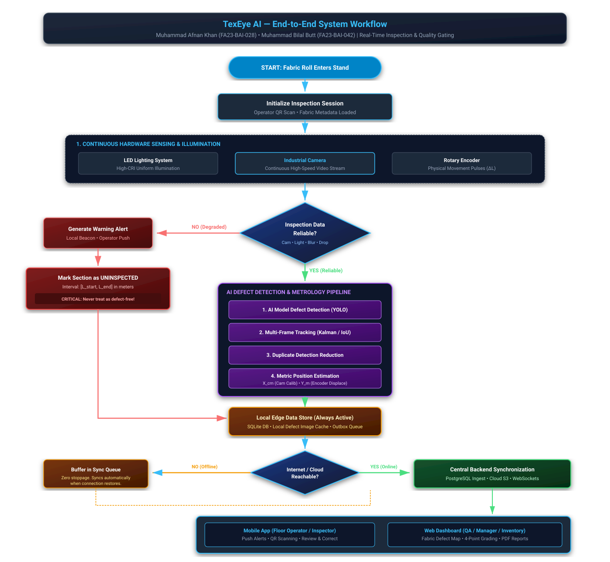
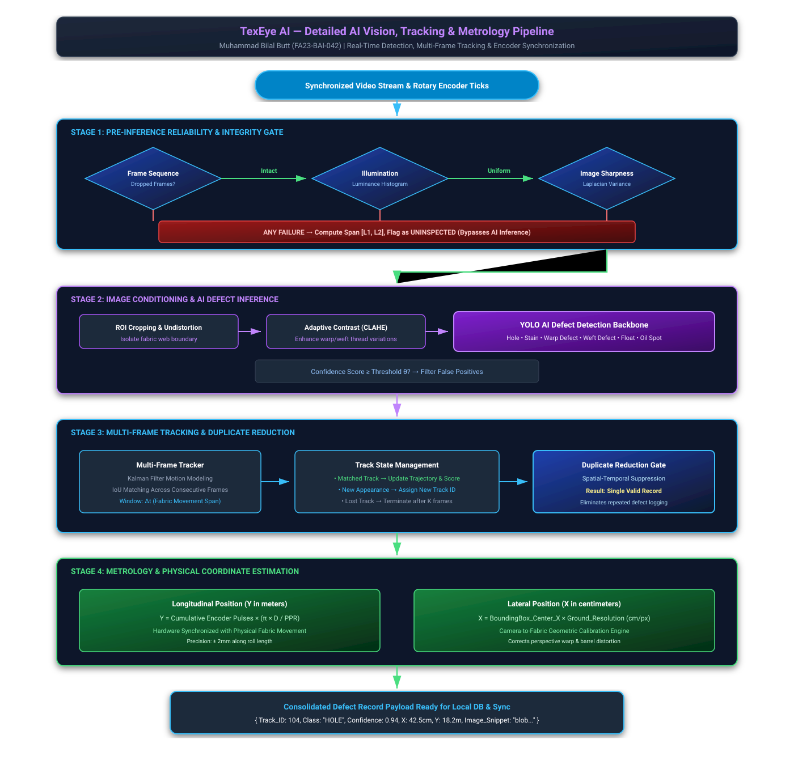
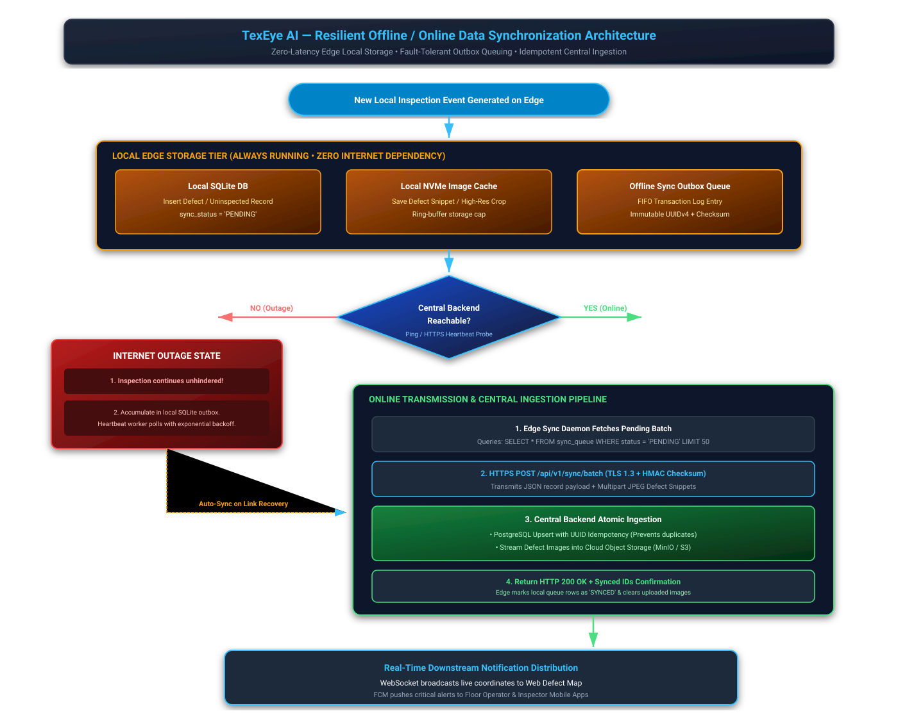
3. Hardware Architecture & Physical Interconnects

Hardware Component & Interface Specification Table
| Component | Connected To | Proposed Interface | Purpose & Data Flow | Selection Status |
|---|---|---|---|---|
| Industrial Camera | Edge Computer | USB 3.0 Vision / GigE Vision / MIPI-CSI2 | Ingests continuous video stream (30–60+ FPS) across full fabric width. | Confirmed Subsystem (Model proposed) |
| Rotary Encoder | Measurement Roller • Edge | GPIO Counter / TTL / Opto DAQ | Measures physical movement pulses ($\Delta L$) and instantaneous line speed. | Confirmed Subsystem (PPR proposed) |
| LED Lighting Rig | Inspection Area • Driver | High-CRI Linear LED Bar Array | Uniform, shadow-free illumination across fabric web. | Confirmed Subsystem (Lux proposed) |
| Lighting Controller | Lighting Array • Edge | Constant-Current 24V DC Driver / PWM | Suppresses electrical ripple and thermal LED drift. | Proposed Alternative |
| Alert Unit | Edge Computer Digital Out | Opto-Isolated Relay • Stack Tower Light | Visual and audible alarm on uninspected span or severe flaw. | Proposed Alternative |
| Edge Computer | Sensors, Storage • Cloud Uplink | NVIDIA Jetson Orin / Industrial PC Mini-ITX | Executes YOLO detection, Kalman tracking, reliability gates & local SQLite. | Confirmed Subsystem (Specs proposed) |
| Network Uplink | Edge Unit to Central Server | Cat6 Gigabit Ethernet / Dual-band Wi-Fi | Transmits HTTPS REST batches and real-time WebSockets. | Proposed Alternative |
4. Layered Software Architecture
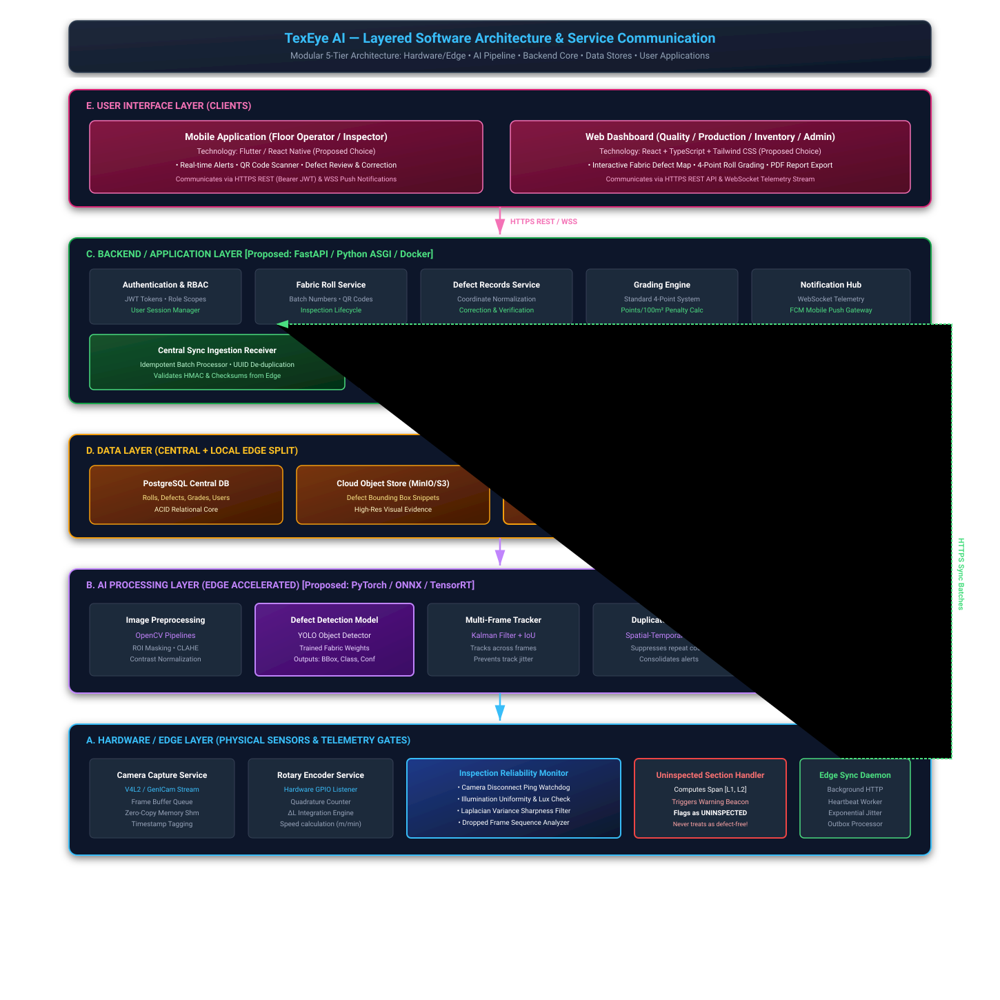
Proposed Technology Recommendations
| Layer / Service | Suggested Technology | Purpose & Rationale | Communication Protocol |
|---|---|---|---|
| A. Camera Capture | Python / OpenCV / GenICam / V4L2 | High-speed zero-copy frame buffer acquisition and timestamp tagging. | Native driver API • Shared memory |
| A. Encoder Service | Python with gpiod / C++ interrupt counter |
Quadrature pulse integration into metric length ($\Delta L$). | GPIO hardware interrupts / UART serial |
| B. AI Defect Detection | PyTorch / ONNX Runtime / TensorRT (YOLOv8) | Real-time defect classification, confidence scores, and bounding boxes. | CUDA memory • Tensor buffers |
| B. Multi-Frame Tracker | Kalman Filter + Hungarian IoU matching | Trajectory association across consecutive frames and spatial-temporal deduplication. | In-memory track state machine |
| C. Central Backend API | FastAPI (Python 3.11+) + Uvicorn ASGI | High-performance asynchronous REST gateway, auth, and sync receiver. | HTTPS / TLS 1.3 • OpenAPI JSON |
| C. 4-Point Grading Engine | Python business logic module | ASTM D5430 standard penalty calculation per 100m² (Grades A, B, C, Reject). | Internal service method |
| D. Local Edge Database | SQLite 3 (WAL Mode Enabled) | Zero-latency ACID commits on shop floor independent of internet connectivity. | C library bindings • POSIX file |
| D. Central Database | PostgreSQL 16 Relational Database | Central enterprise repository for rolls, verified defects, grading, and users. | SQLAlchemy / Asyncpg over TCP:5432 |
| E. Mobile Application | Flutter / React Native | Floor operator QR scanning, instant vibration alerts, defect thumbnail reviews. | HTTPS REST • WSS WebSockets |
| E. Web Dashboard | React 18 + TypeScript + Tailwind CSS | Interactive 2D Digital Fabric Defect Map, roll grading approvals, PDF export. | HTTPS REST • HTML5 Canvas 2D |
5. Actors Identification & UML Use Cases
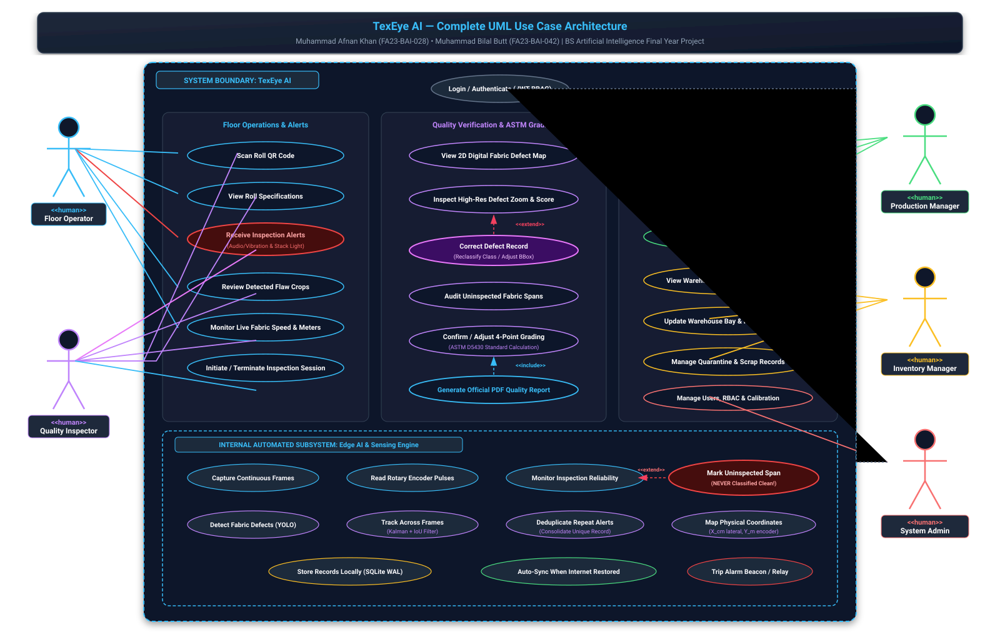
Floor Operator (Mobile Client)
- Scan physical roll QR code to initialize inspection session
- View active roll speed, inspected meters, and fabric type
- Receive instant vibration & audio alerts on uninspected state or major defects
- Review defect thumbnail crops on shop-floor mobile device
Quality Inspector (Web & Mobile)
- Open interactive 2D Digital Fabric Defect Map canvas
- Review high-resolution defect crops and confidence scores
- Correct Defect Records (reclassify label or adjust bounding box)
- Confirm and certify ASTM 4-Point Roll Grading
- Generate and export digitally signed PDF inspection certificates
Production Manager (Web Dashboard)
- View executive production throughput and roll pass/fail rates
- Analyze defect Pareto frequency charts and historical trends
- Filter inspection quality by loom ID, batch number, or fabric blend
Inventory Manager (Web Dashboard)
- View warehouse inventory records and certified roll grades
- Update warehouse bay / rack storage coordinates
- Manage quarantine records for rejected/scrap fabric rolls
6. Complete UML & Data Flow Diagrams
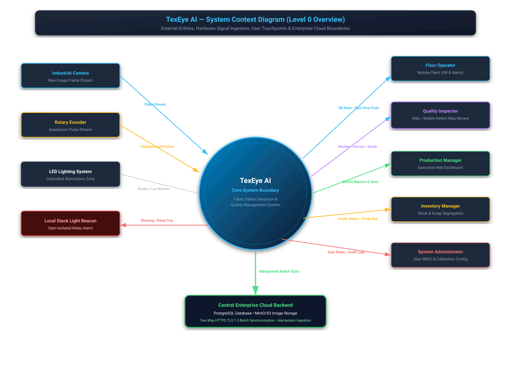
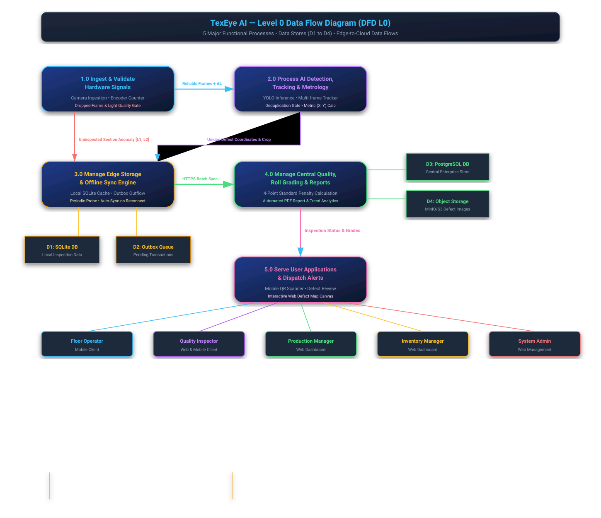
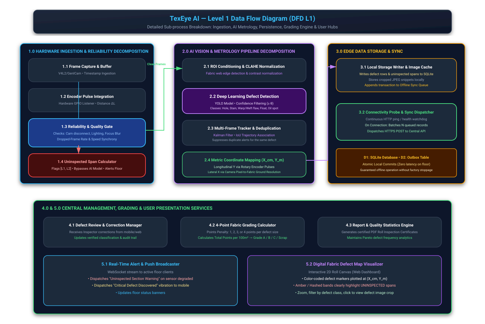
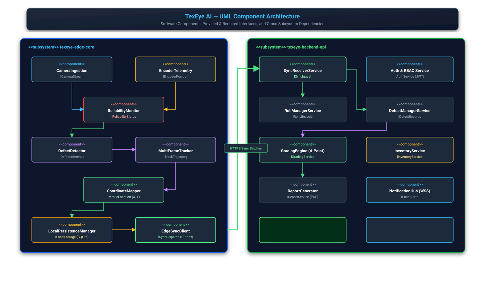
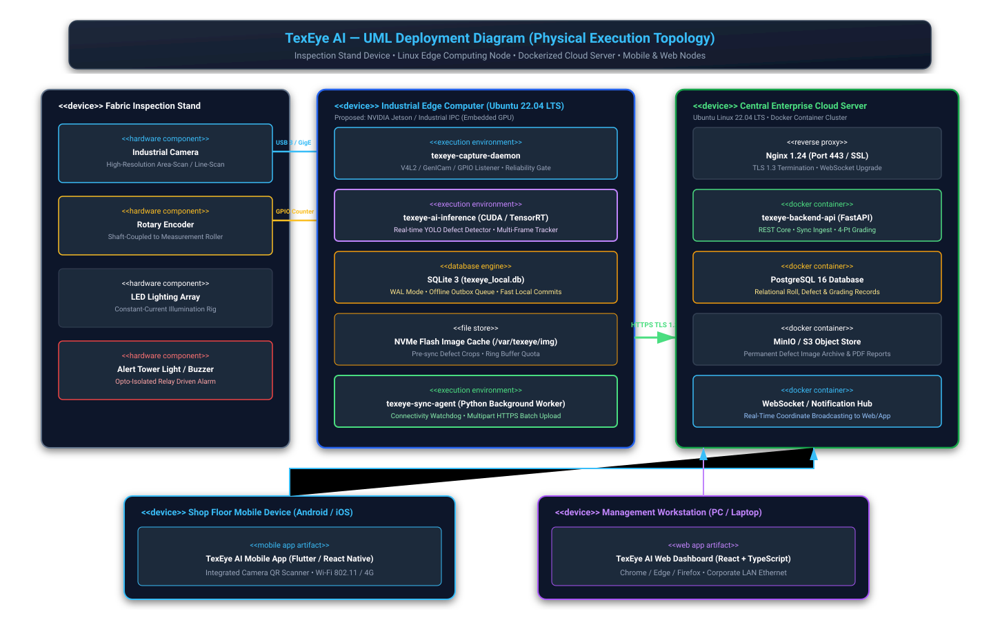
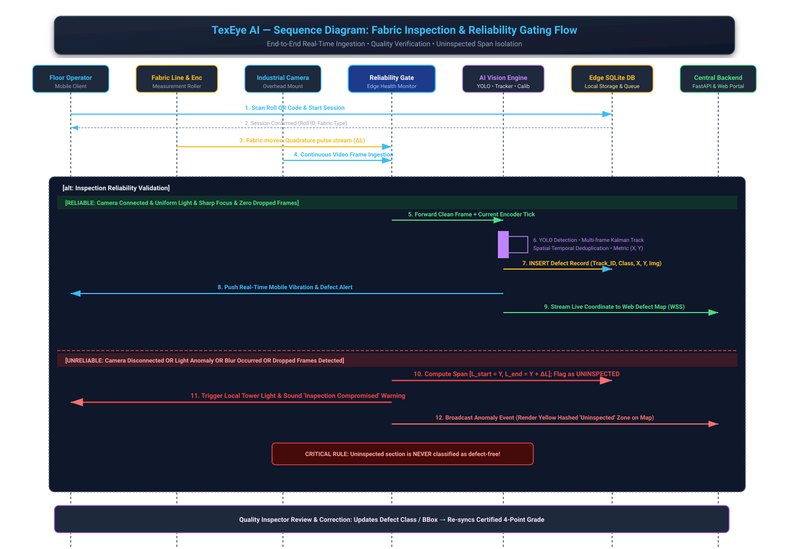
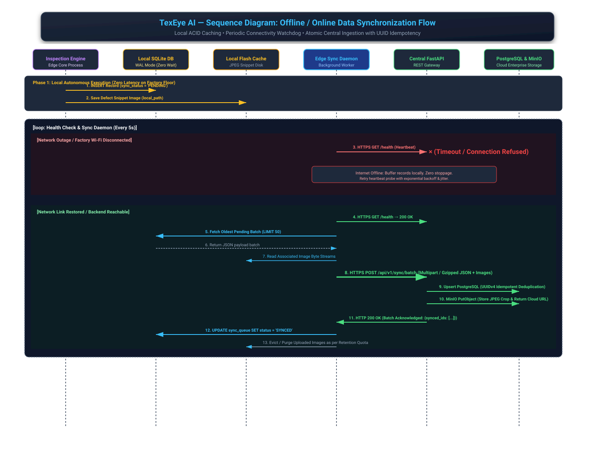

7. Project Division & Member Responsibilities
Muhammad Afnan Khan
FA23-BAI-028Application Architecture, Frontend & Cloud Integration Lead
- Cross-platform Mobile Application (Flutter/React Native)
- Camera QR code scanning and roll metadata binding
- Floor operator real-time alert reception & defect thumbnail preview
- Web Dashboard (React + TypeScript + Tailwind CSS)
- Interactive 2D Digital Fabric Defect Map canvas
- Defect review and on-screen human reclassification interfaces
- Roll lifecycle, batch numbers & warehouse inventory records
- ASTM D5430 4-Point Fabric Inspection Grading Engine
- Automated PDF digital inspection certificate generator
- Application-side local data synchronization and offline state caching
Muhammad Bilal Butt
FA23-BAI-042AI Vision, Deep Learning, Hardware & Reliability Lead
- Fabric defect dataset collection, domain annotation & augmentation
- Deep learning object detection model training (YOLOv8 / RT-DETR)
- Real-time edge GPU inference engine optimization (TensorRT / ONNX)
- Multi-frame defect tracking (Kalman Filter + Hungarian IoU matching)
- Spatial-temporal deduplication gate (eliminates repeated counting)
- Rotary encoder hardware integration & pulse displacement counting
- Industrial camera driver integration (USB3/GigE/V4L2) with memory buffers
- Illumination uniformity, blur, and dropped-frame watchdog monitors
- Inspection Reliability Gate & uninspected section isolation
- Hardware alert triggering (relay output for physical stack tower beacon)
8. Supervisor Viva & Presentation Guide (Roman Urdu)
Both team members can use these exact talking points during supervisor defense sessions:
Q1: "Fabric tez chalay aur camera frame drop kare to kya hoga?"
"Sir, yahi hamare system ka sab se bara feature hai. Hamara Dropped-Frame Analyzer rotary encoder ki physical movement speed aur camera ke incoming timestamps ko match karta hai. Agar frame drop ho, to system us missing interval ke encoder meters calculate karke foran uninspected_sections table mein row insert karta hai aur alarm bajata hai. System us missing section ko kabhi bhi clean ya defect-free treat nahi karega."
Q2: "Camera failure aur internet outage mein kya farq hai?"
"Sir dono completely mukhtalif failure modes hain: Camera Failure hardware sensing ka fault hai; fabric chal raha hai lekin hum dekh nahi pa rahe. Is mein AI inference bypass hoti hai, fabric uninspected mark hota hai, aur floor alarm bajta hai. Internet Outage network ka fault hai; edge computer aur camera bilkul theek chal rahe hain. Is soorat mein inspection 100% full speed par chalti rehti hai, defects detect hote hain, aur local SQLite outbox queue mein save hote hain. Jab internet aayega to background worker baghair kisi data loss ke cloud se sync kar lega."
Q3: "Aik hi defect 5 consecutive frames mein aaye to grading kharab nahi hogi?"
"Sir bilkul, agar naive system ho to wo 5 alag defects count kar lega. Is maslay ko hal karne ke liye Bilal Butt ne Multi-Frame Defect Tracker aur Spatial-Temporal Deduplication Gate implement kiya hai. Yeh Kalman Filter aur IoU matching se defect ko track karta hai aur jab defect frame se nikal jata hai to un tamam frame detections ko aik single unique defect record mein consolidate kar deta hai."
Q4: "Defect ki physical metric position $(X, Y)$ kaise calculate hoti hai?"
"Sir, longitudinal position ($Y$ meters) rotary encoder ke cumulative pulses ko roller circumference ($\pi \times D / \text{PPR}$) se multiply karke aati hai. Aur lateral position ($X$ centimeters) camera pixel coordinates ko calibrated ground sampling resolution (cm/pixel) se multiply karke aati hai."
9. Download Center & Deliverables Package
Access all editable Draw.io XML files, standalone SVG vectors, rendered PNGs, and technical markdown specifications:
Editable Draw.io Diagrams
10 Native XML files ready to open in diagrams.net / VS Code Draw.io.
Browse Draw.io FolderStandalone Vector SVGs
14 Handcrafted scalable vector graphics with dark-theme styling.
Browse SVG FolderHigh-Resolution PNGs
14 Pixel-perfect PNG renders exported via headless Microsoft Edge.
Browse PNG FolderMermaid Diagram Sources
14 Raw .mmd source files for GitHub markdown rendering.
Browse Mermaid FolderTechnical Documentation Files (docs/)
- 📄 01_project_overview.md — Project Overview & Real-World Problem
- 📄 02_system_workflow.md — System Workflow & Decision Pipeline
- 📄 03_hardware_architecture.md — Hardware Architecture & Component Table
- 📄 04_software_architecture.md — Layered Software Architecture & Protocols
- 📄 05_actors_and_use_cases.md — Actor Specifications & Use Case Tables
- 📄 06_data_flow_diagrams.md — Context, DFD Level 0 & Level 1
- 📄 07_component_and_deployment.md — Component & Deployment Diagrams
- 📄 08_sequence_diagrams.md — Real-Time Inspection & Offline Sync Sequences
- 📄 09_entity_relationship_diagram.md — ERD Schema & Data Dictionary
- 📄 10_team_responsibilities.md — Team Task Matrix (Afnan & Bilal)
- 📄 11_hardware_selection_checklist.md — Hardware Procurement Checklist
- 📄 12_assumptions_and_limitations.md — System Constraints & Scope Boundaries
- 📄 roman_urdu_defense_guide.md — Complete Supervisor Viva Script in Roman Urdu